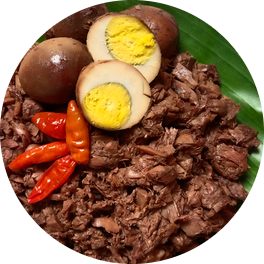
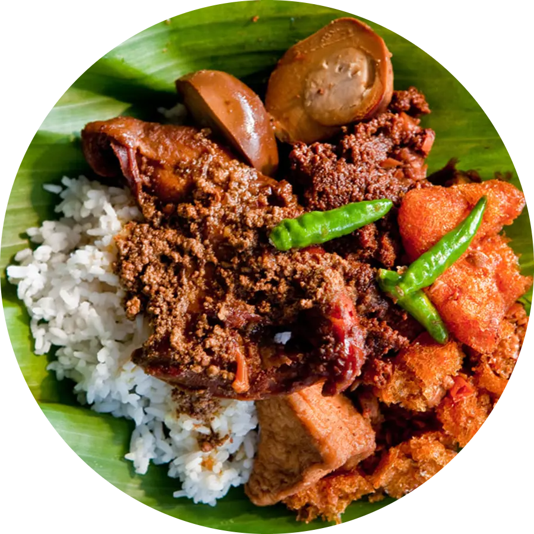

Gudeg
Gudeg merupakan hidangan khas Yogyakarta, Indonesia. Gudeg terbuat dari nangka muda yang dimasak dalam santan kelapa dan bumbu rempah. Hidangan ini memiliki rasa manis dan gurih, dan biasanya disajikan dengan nasi, ayam kampung, telur, dan sambal krecek (kulit sapi yang dimasak kering). Gudeg sering dianggap sebagai sajian sarapan atau makan malam yang lezat.

Bahan-Bahan
(Untuk 10 porsi):
1,5 kg nangka muda, potong ukuran 3 cm x 5 cm
250 gram daging tetelan
1 liter santan dari 2 butir kelapa
4 lembar daun salam
1 iris lengkuas
1 sdm angkak
100 gram gula merah
Bumbu gudeg (haluskan)
3 sdm bawang merah iris
2 sdm bawang putih iris
10 buah kemiri
1 sdm ketumbar
1 sdt garam
Cara Membuat
1. Siram nangka dengan air mendidih supaya getahnya terlepas, kemudian tiriskan;
2. Masukkan nangka ke dalam panci presto beserta daging, bumbu, dan santan. Tutup presto dan kunci. Masak dalam panci presto selama 45 menit. Angkat;
3. Buka katup pengatur suhunya, biarkan uap keluar semua. Setelah itu buka panci dan angkat;
4. Hidangkan gudeg nangka selagi hangat bersama nasi merah atau putih.
